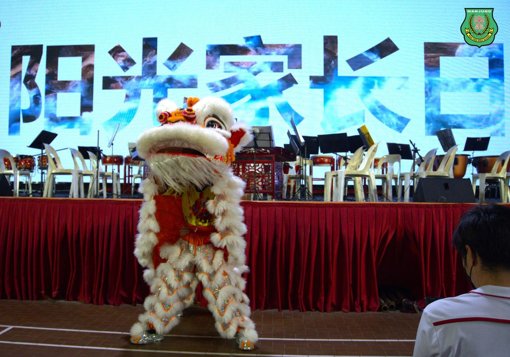
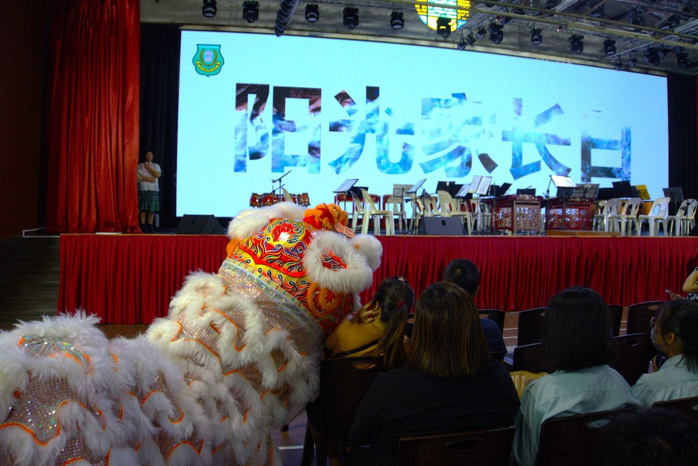
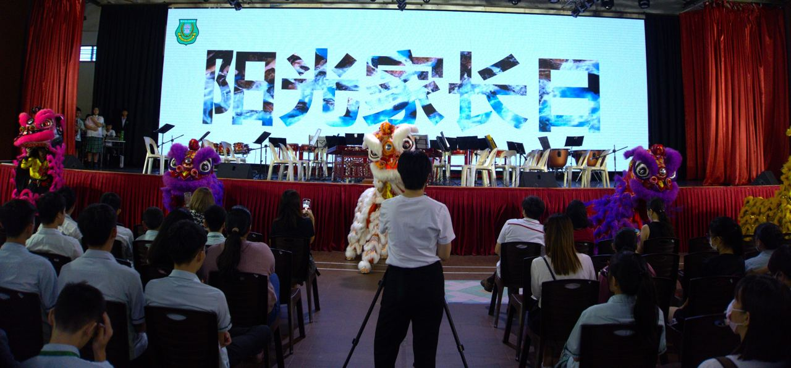
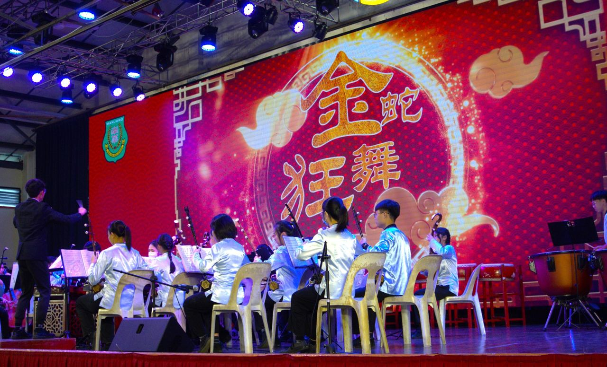
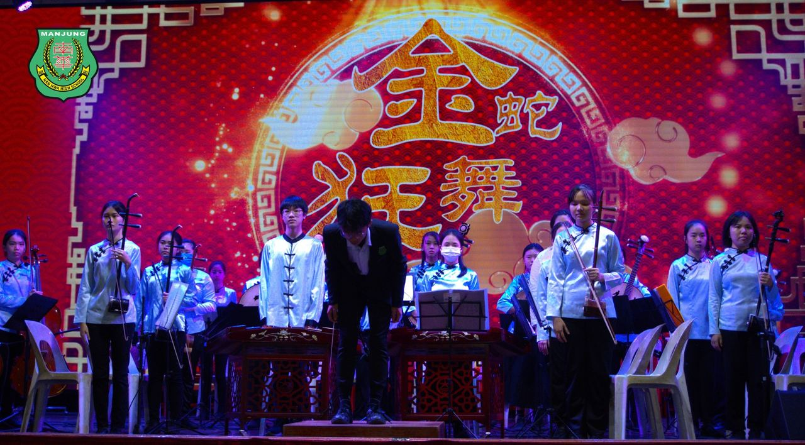
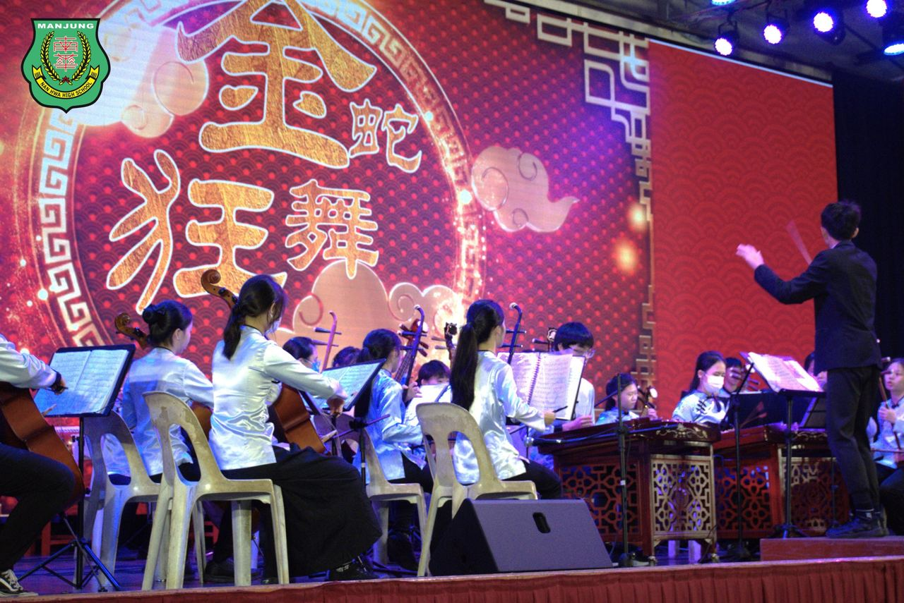
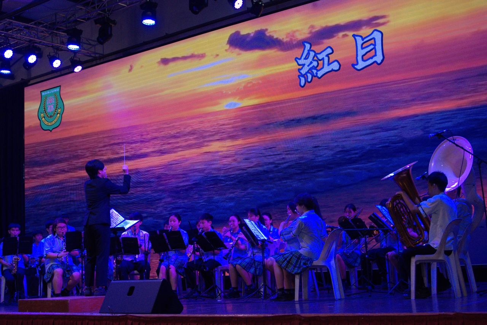
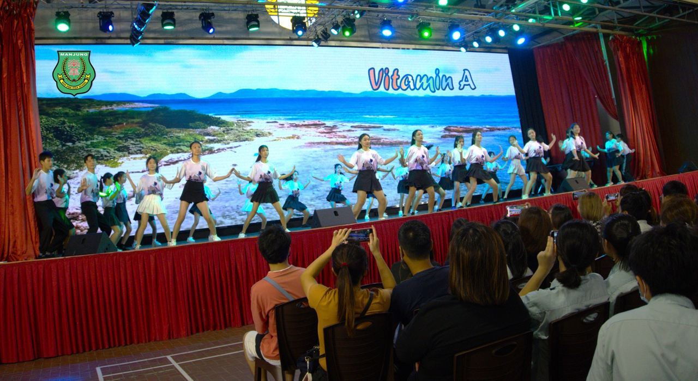

南华独中办阳光家长日
南华独中办阳光家长日
学生展示学术与艺术丰富成果
南华独中于日前举办了期待已久的“阳光家长日”，邀请学生家长出席参与。这不仅是一场让家长验收学生们学术与艺术成果的盛宴，更促进了学校与学生家长合作的盛会，校长陈丽冰博士汇报与总结该校一年的课程改革并对新校训“明德·格物·致知·笃行”推出做出了说明，让家长们更深入了解学校教育理念。
当天的活动涵盖了丰富多彩的内容，其中重点包括联课成果表演、学术成果展、家长与班导会谈暨分发学生成绩单等。作为活动的亮点之一，联课成果表演将学生的多才多艺展现得淋漓尽致。各个学会团体的精彩表演令人叹为观止，参与表演的学会团体包括醒狮团、华乐团、24节令鼓、舞蹈团以及管乐团。他们的精湛演出不仅展示了学生们的团队合作和表现能力，同时也彰显了南华独中对艺术教育的重视。
除了艺术表演，学术成果展也吸引了众多家长和学生的兴趣。在展览区域，学生们用极具创意的方式展示了他们在不同学科领域取得的优异成绩和研究成果。家长们在这里不仅能够更深入了解学生们的学术发展，还可以与老师们交流，分享学习心得。
家长与班导会谈是家校合作的重要环节。在这个环节，家长们有机会与班导师亲切交流，了解孩子在学校的表现和进步，同时也能够提出问题和建议。学生成绩单的发放也是家长们关注的焦点，他们可以更直观地了解孩子在各个科目上的表现，从而更好地辅导和支持他们的学习。
南华独中校长陈丽冰博士在说明会上表示，“阳光家长日”不仅是学校与家长之间沟通的桥梁，更是学生们展示自己成果的舞台。陈校长时刻秉持着“心有多大，舞台就有多大”的信念，坚信南华独中的学生只要坚持与奋斗，便能拥有无限的潜能与天赋。
#阳光家长日 #联课成果 #学术表现 #校训
#南华独中 #曼绒 #实兆远







